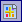

|
|
|
|
|
|
|
|
This section describes how to create:
Global Action Reports – Lists all the actions used in a target
Panel Action Reports – Lists all the actions used on a selected panel.
You can create a report that provides a list all the actions for a target or a filtered list of specific actions. Action reports display in Vijeo-Designer's InfoViewer. You can also print the report from InfoViewer. Action reports contain the following information:
Header Line – Displays the action's trigger type for the action
Description – Contains the action's description that was specified in the Action Settings dialog box.
PublishTo – Displays the Publish To setting for the Global Action report, if Web Gate is enabled for the target.
Interlock – Displays the action's Interlock variable, if Interlock has been set for the action.
List of Operations – Displays a script or a list of operations generated for each action.
To generate an actions report of all the actions used in the target:
Click the Actions node in the Navigator window to open the Actions Editor.
Do one of the following:
In the Report menu, select Actions.
In the Navigator window, right-click the panel and select Report.
In the Actions Editor, click

.To generate a filtered actions report for the target:
Click the Actions node in the Navigator window to open the Actions Editor.
Select the filter criteria by selecting the Show Periodic Actions icon, Show Scheduled Actions icon, Show Conditional Actions icon, or Show Event Actions icon.
Do one of the following:
In the Report menu, select Actions.
In the Navigator window, right-click the panel and select Report.
In the Actions Editor, click .
To generate a report of all the actions used in a selected panel:
In the Navigator window, right-click a panel and select Report.
Do one of the following:
In the Report menu, select Actions.
In the Navigator window, right-click the panel and select Report.
In the Actions Editor, click .
To generate a filtered report of the actions in the panel:
In the Navigator window, select the Panel Actions node for a panel.
In the Actions Editor, select the filter criteria by selecting the Show Periodic Actions icon, Show Scheduled Actions icon, Show Conditional Actions icon, or Show Event Actions icon.
Do one of the following:
In the Report menu, select Actions.
In the Navigator window, right-click the panel and select Report.
In the Actions Editor, click .
In the Select a Report dialog box, select one of the following reports:
Panels – a report on the selected panel.
Panel Actions – a report of all the actions in the selected panel.
Panels and Panel Actions – a report on the selected panel and all the actions in the panel.